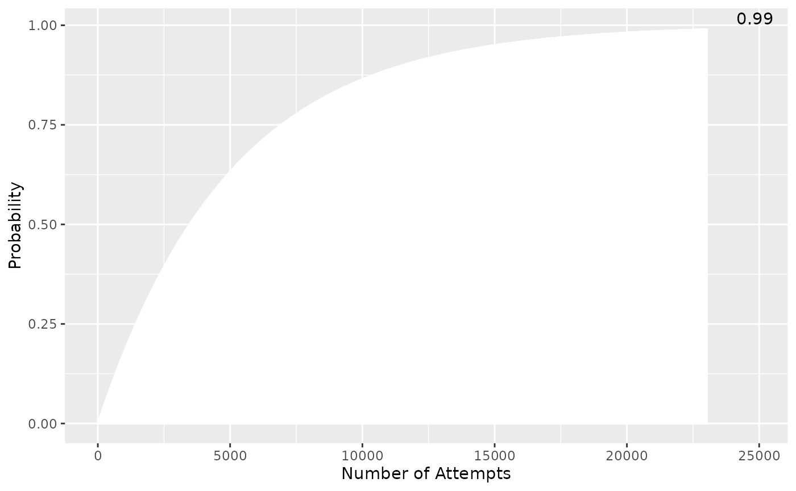

compassistr
compassistr.RmdIntroduction
A set of tools to help compute task time/ probabilities for video game completionist tasks.
“Completionism” is a common goal in video games, referring to the goal of achieving every objective in a game (or individual extraneous side-objectives), as opposed to merely doing enough to win. Common examples include hunting for Shiny Pokemon, the Runescape Collection Log, World of Warcraft Achievement Log, among many others. Completionism is generally an exercise in goal setting, dedication, time-commitment, and efficiency. As an example of the time scales involved, hunting a single shiny Pokemon can takes dozens of hours, completing individual Runescape bosses can take from less than ten to many thousands of hours, and the impossible task of completing the entire collection log is estimated to be more than 500 years of play time. Small optimizations have the potential to save large amounts of time and effort, and as such completionist players are often very efficiency-oriented by necessity.
This package provides tools to help completionist players focus and analyze their goals. These tools compute and visualize expected attempts, play times, and probabilities to help players understand their goals and compare the efficiency of different methods. Current tools are developed with use cases focusing on goals in the games Oldschool Runescape and Pokemon, but the use cases are easily generalized to other applications.
Package Usage
Installing/Running compassistr
To install the current version of compassistr, please
run the following code. If necessary, un-comment the first line and
install the devtools package if it is not already
installed. compassistr is not currently available on
CRAN.
# install.packages("devtools")
devtools::install_github("UBC-MDS/compassistr")Once installed, you can use compassistr in an active R
session using the following command:
boss_completion()
This function focuses on goal setting. Specifically, for challenges with multiple rewards (i.e. a boss that drops many desirable items) it computes the expected number of completions to get at least one of each reward (‘completing’ the boss), allowing users to decide if a goal is worth the expected time commitment.
For a full example; Oldschool Runescape has a challenge called the Tombs of Amascut: https://oldschool.runescape.wiki/w/Tombs_of_Amascut. There are seven main unique rewards on a drop table: https://oldschool.runescape.wiki/w/Chest_(Tombs_of_Amascut)#Opened, with a 100% chance to receive an item when the table is rolled. The probability to roll this drop table depends on the level of challenge completed, but for this calculation we will assume 1/20 (corresponding to 325 raid level, walk the path active).
For a challenge with no drop table mechanic, do not enter a base rate arguments, just the probability of the drops upon completion.
To calculate the number of completions required:
# Enter drop rates and base_rate
rates <- c(7/24, 7/24, 3/24, 2/24, 2/24, 2/24, 1/24) #ToA droprates
base <- 1/20 #Probability to recieve an item
boss_completion(rates = rates, base_rate = base, verbose = FALSE)
#> $conv
#> [1] 1
#>
#> $count
#> [1] 673$count is the expected number of completions
$conv is a converge factor. If this is anything other
than 1 and an error is not thrown, please post your use case as an issue
on the package repo: https://github.com/UBC-MDS/compassistr
This function has additional functionality, acting as a simplified
version of the dry_calc function. When the
attempts argument is passed, it calculates the binomial
probability of receiving at least one of each item (completing the boss)
in the given number of attempts, where $prob is the
percentage probability.
attempts = 1000
boss_completion(rates = rates, base_rate = base, attempts = 1000, verbose = FALSE)
#> $conv
#> [1] 1
#>
#> $count
#> [1] 673
#>
#> $prob
#> [1] 77.39
dry_calc()
dry_calc() focuses around assessing the probability of
at least one event occurring in a specific number of attempts. In the
completionist context it is used for cases such as determining the
probability of obtaining a specific item from a boss in a given number
of attempts based on the bosses drop rate. Players often want to know
how lucky/ unlucky they are on a certain goal, such as when obtaining a
rare item much quicker than expected, or conversely going far beyond the
expected drop rate.
For a full example, the Dragon Warhammer https://oldschool.runescape.wiki/w/Dragon_warhammer is an important item in Old School Runescape, obtainable only as a 1/5000 drop from a specific enemy. A streamer named Settled was famously extremely unlucky (“dry”) in obtaining this item, obtaining it after 24386 kills.
dry_calc(1/5000, 24836L, verbose = FALSE, plot = FALSE)
#> [1] 0.9930408Therefore according to dry_calc Settled had a 99.3%
chance to obtain one in this main kills, meaning only 0.7% of players go
equally or more dry.
dry_calc can also plot the cumulative binomial CDF to
see where on the probability curve the user currently is, and how the
probability changes in either direction:
dry_calc(1/5000, 24836L, verbose = FALSE, plot = TRUE)
#> [1] 0.9930408
shiny_hunt()
shiny_hunt() was developed for the specific application
of catching shiny Pokemon https://pokemon.fandom.com/wiki/Shiny_Pokémon.
Because the encounter rate depends on the ‘gen’ (release series) of the
desired Pokemon, the only required input is gen
Optional inputs to enhance accuracy include:
masuda and shiny_charm, Booleans
representing specific shiny hunting methods. Default false.
encounter_rate: the % probability of encountering the
desired Pokemon in the hunting location. i.e. for an area where 30% of
encounters are the desired Pokemon, this would be 30. Default is 100%
for rate of encountering any shiny (non specific)
attempt_time time in seconds per encounter when hunting
wild shiny Pokemon. Depends on the hunting region/ user speed, so
requires self measurement by the user.
hatch_time time in seconds to hatch an egg, specific to
breeding shiny methods. Depends on specific Pokemon.
For example for a gen 8 pokemon with a 75% encounter rate in a region, with the user utilizing the Shiny Charm method and getting 3 encounters per minute we expect:
shiny_hunt(gen = 8, encounter_rate = 75, attempt_time = 20, shiny_charm = TRUE)
#> # A tibble: 5 × 3
#> perc_chance attempts hours
#> <chr> <dbl> <dbl>
#> 1 25% 653 3.63
#> 2 50% 1573 8.74
#> 3 75% 3145 17.5
#> 4 90% 5221 29.0
#> 5 99% 10441 58.0The output is a range of probability quantiles as a function of both attempts (Pokemon encounters in this case) an hours taken. I.e. the user has a 90% chance to obtain the desired shiny after 29.01 hours.
pts_calc()
The pts_calc function is designed to compare different
strategies, such as cases where the user needs to obtain a certain
threshold of points to purchase an item, or a reward is expected at a
certain threshold of points.
This can also be generalized for boss kills, rather than points (i.e. different kills/ time for different methods).
The function outputs a ranked list of the methods it is provided, along with the time to completion for each method. Points and times are passed as an ordered numeric vector – order must be the same for correct results.
For example, in the Chambers of Xeric in Runescape https://oldschool.runescape.wiki/w/Chambers_of_Xeric, a player might be able to finish a solo normal mode raid in approximately 30 minutes for around 32,000 points, or a challenge mode raid in 65 minutes for 60,000 points. The player will obtain a unique item approximately every 800,000 points.
pts_calc(points_attempt = c(32000, 60000),time_attempt = c(30, 65) ,target_points = 800000)
#> [1] 750.000 866.667We can therefore see that the first method will take 750 minutes to receive an item, and the second will take 867 minutes.